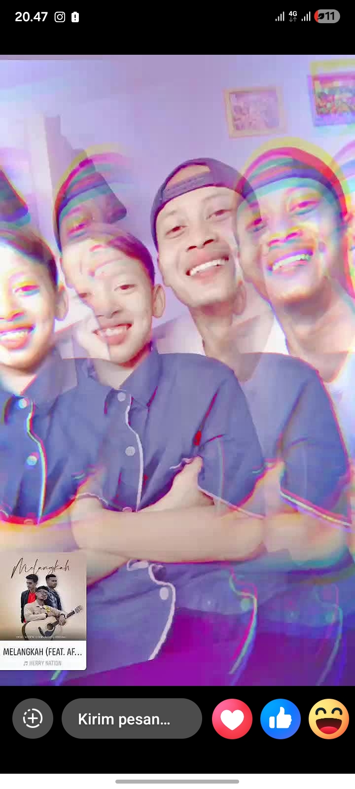
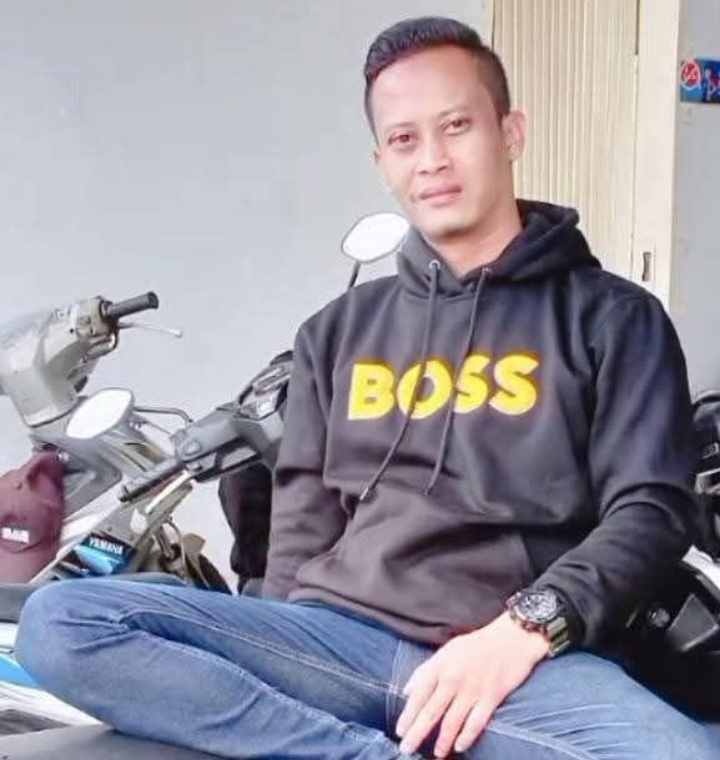
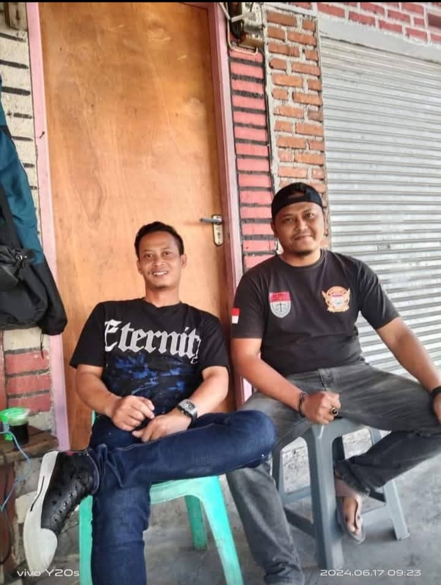
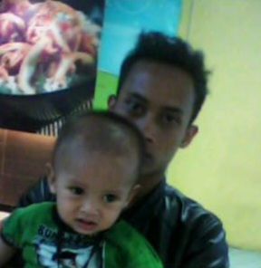
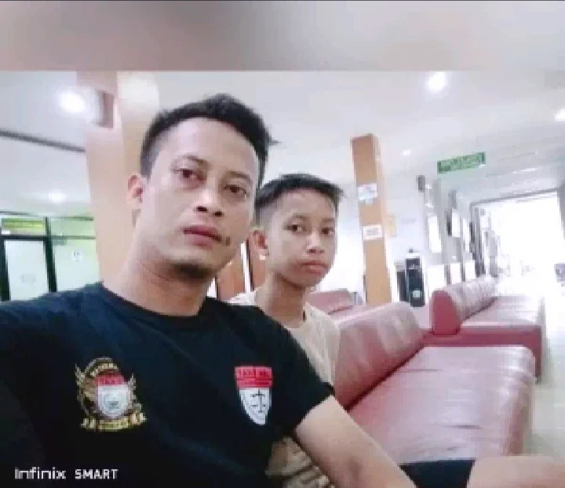
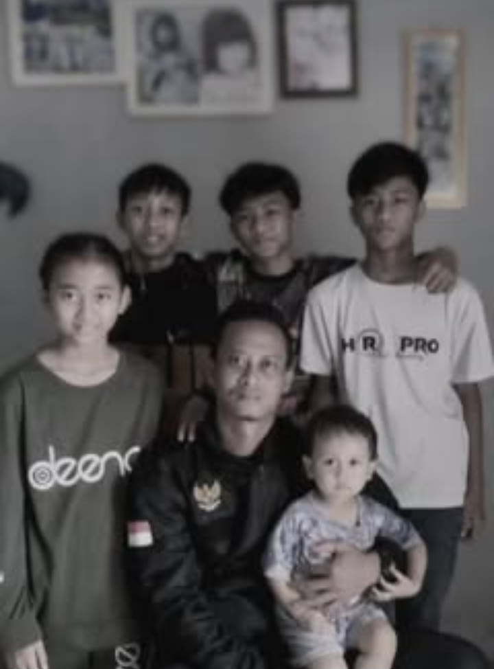
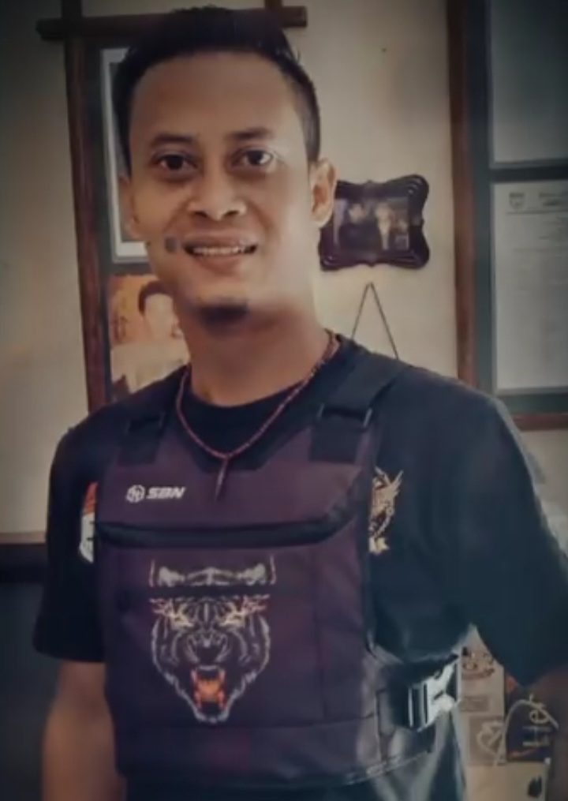

رَبِّ اغْفِرْ لِي وَلِوَالِدَيَّ وَارْحَمْهُمَا كَمَا رَبَّيَانِي صَغِيرًا
"Robbighfirlii wa li waalidayya warhamhumaa kamaa rabbayaanii shoghiiroo"
"Ya Tuhanku, ampunilah aku dan kedua orang tuaku, dan sayangilah mereka sebagaimana mereka telah mendidikku sewaktu kecil."
Untuk setiap peluh yang Ayah jatuhkan tanpa pernah mengeluh, untuk setiap malam yang Ayah jaga agar kami bisa tertidur dengan tenang — terima kasih, Ayah.
Ayah adalah rumah pertama kami sebelum kami mengenal kata rumah. Tangan Ayah adalah peta jalan yang kami ikuti, dan diam Ayah adalah doa yang tak pernah putus untuk kami.
Kami mungkin tidak selalu mengatakannya, tapi setiap langkah kami hari ini berdiri di atas pundak Ayah yang kuat itu.

Ayah berfoto
Ayah dengan om sandy
Ayah dengan nizam¹
Ayah dengam nizam²
Ayah dengan anak anak
Ayah berfoto"Selamat istirahat dalam damai, Ayah. Cahayamu akan selalu menyala dalam diri kami."
Selalu Dikasihi, Selalu Dikenang